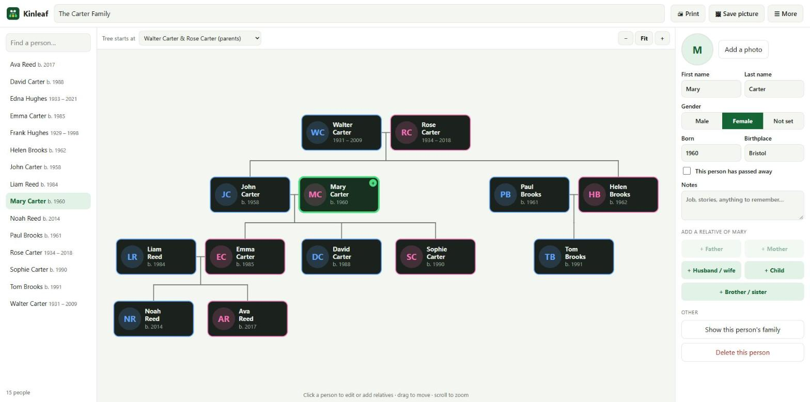

Open Kinleaf. The first time, it asks for one person – usually yourself.
Type the first name and last name, choose the gender, and add the year of birth if you know it.
Click Start my tree.
Not sure yet? Click Look at a sample family first to see a finished tree. You can start your own later with ☰ More → Start a new empty tree.
2. Add relatives

The sample family with Mary Carter selected. The list of people is on the left; her details and the buttons to add a father, mother, husband or wife, child, brother or sister are on the right.
Click a person in the tree. Their details open on the right.
Under Add a relative click one of the buttons: + Father, + Mother, + Husband / wife, + Child or + Brother / sister.
A new person appears and is selected. Type their name and details on the right.
Repeat from any person to grow the tree in every direction.
When you add a child to someone with more than one husband or wife, Kinleaf asks Who is the other parent? so the child is placed in the right family.
3. Fill in a person’s details
Click a person, then use the panel on the right:
Add a photo – choose a picture from your PC. A face photo works best.
First name, Last name and Gender.
Born and Birthplace – a year such as 1958 is enough; a full date also works.
This person has passed away – tick it to add the year of death.
Notes – job, stories, anything worth remembering.
Marriage – for someone with a husband or wife, type the wedding date and place. A full date such as 30 Jun 1984 puts the anniversary in the family book’s calendar.
Everything is saved automatically as you type.
4. Move around the tree
Drag the background to move the tree.
Scroll the mouse wheel to zoom, or use the −, Fit and + buttons. Fit shows the whole tree.
Use the list of people on the left to jump straight to someone.
Tree starts at (above the tree) chooses what is shown: the descendants of one ancestor couple, or one person with both their ancestors and their descendants.
Show this person’s family (in the right panel) redraws the tree around the selected person.
5. Delete or correct a person
Click the person and change any field to correct it. To remove someone, click Delete this person at the bottom of the right panel and confirm.
6. Print the tree or save it as a picture
🖨 Print – opens the Windows print window. Choose landscape for wide trees.
🖼 Save picture – saves the tree as a PNG picture in your Downloads folder, ready to e-mail or share.
☰ More → Save large picture for poster printing (Pro) – a much sharper picture for printing at a copy shop and hanging on the wall.
6b. Fan chart of ancestors
A fan chart shows one person in the middle and their parents, grandparents and older generations around them in a half circle. Each grandparent’s line has its own colour, so you can see at a glance where each branch of the family comes from.
Above the tree, set Chart to Fan chart – ancestors.
The person you had selected is put in the middle. To change it, click someone, then Show this person’s family.
Choose 4 to 7 Generations.
Click 🖨 Print or 🖼 Save picture (Pro). The saved picture is large and sharp enough for a poster.
Empty, dashed spaces are ancestors you have not entered yet – a handy to-do list for your family research. Set Chart back to Family tree for the normal view.
6c. Wall poster
Turn your tree into a framed poster to hang on the wall or give as a gift.
Show the chart you want on screen: the family tree (choose whose family with Show) or the fan chart.
Click 🪧 Wall poster at the top.
Type the Title (for example The Carter Family) and an optional line under it (Four generations · Christmas 2026).
Choose a Style: Classic parchment, Botanical green, Modern white or Heritage navy & gold.
Choose the Poster size – from one Letter or A4 sheet up to 24 × 36 in – and the direction. Best fit for my tree picks portrait or landscape for you.
Print it
💾 Save poster file (Pro) saves a high-resolution JPG in your Downloads folder. Upload it to a copy shop or photo shop (Walmart, CVS, Staples, Office Depot and many online services print posters) and choose the same size.
🖨 Print (Pro) prints a Letter or A4 poster on one sheet. For bigger sizes it prints the poster in pieces on your home printer – trim along the corner marks, overlap the edges by ¼ inch and tape them together on the back.
Photos you added to people appear on the poster. The dark Heritage style uses a lot of ink on a home printer – for printing at home, Classic, Botanical or Modern are better.
6d. Family history book
Make a printed book of your family to keep or give: a cover with your tree, one entry for every person with photo, dates, places, parents, marriages, children and notes, a calendar of birthdays and wedding anniversaries, and an index of names.
Show the chart you want on the cover, then click 📖 Family book at the top (or ☰ More → Family history book).
Type the Title and an optional line under it, and choose Letter or A4 paper.
Optional: in Show how everyone is related to choose a person – for example a grandchild who gets the book – and every entry says how they are related (“Emma’s great-grandfather”).
Tick the parts you want: cover, photos, notes, calendar and index. The preview on the right shows the whole book.
Click 🖨 Print or save PDF (Pro). In the print window choose your printer, or Microsoft Print to PDF for a PDF to e-mail to the family.
People are grouped by generation, oldest first, and numbered; the numbers in brackets point to each person’s entry. Birthdays only appear in the calendar when the full date is typed (for example 12 Mar 1958), not just the year. The free version shows the full preview with a PREVIEW mark.
6e. How are two people related?
Click ☰ More → How are two people related?, or click a person and then 🔗 How is … related to… in the right panel. Choose two people and Kinleaf tells you the relationship both ways – grandfather, great-aunt, half-brother, second cousin once removed, sister-in-law, stepson and more – and the closest common ancestors. Show both in the tree draws the family of those ancestors. This is free.
7. Keep your work safe: backups
Your tree is stored on this PC only. Make a backup now and then:
Click ☰ More → Save a backup file. A file is saved in Downloads.
Keep that file somewhere safe, for example on a USB stick.
To get the tree back, or to move it to another PC, click ☰ More → Open a backup file… and choose it.
8. Exchange with other family tree programs (Pro)
GEDCOM is the standard file type for family trees. With ☰ More → Export GEDCOM file you can take your tree to Ancestry, MyHeritage, FamilySearch and other programs. With Import GEDCOM file… you can bring a tree from those programs into Kinleaf. Names, gender, birth and death dates and places, marriages, notes and occupations are kept. Photos are not part of GEDCOM files – add them again in Kinleaf.
9. Free version and Pro
The free version holds up to 20 people with photos, printing, pictures and backups. Pro is a one-time purchase and adds unlimited people, printing and saving wall posters, the large poster picture, printing and saving fan charts, printing the family history book, and GEDCOM import and export. The relationship finder and the marriage dates are free. Click ★ Get Pro at the top to see the price, or Restore purchase if you bought it before.
10. If something goes wrong
I cannot see someone I added: click their name in the list on the left, or change Tree starts at.
The printed tree is too small: choose landscape and a larger paper in the print window, or use Save picture and print the picture.
My tree is gone on a new PC: the tree stays on the PC where you made it. Move it with a backup file (section 7).
Questions or problems? Write to thequan03072002@gmail.com. Kinleaf works offline and your files never leave your PC.